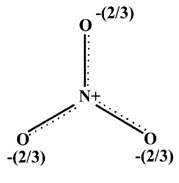
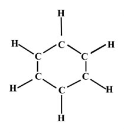

An Introduction to the Electronic Structure of Atoms and Molecules
Professor of Chemistry / McMaster University / Hamilton, Ontario
An Introduction to the Electronic Structure of Atoms and MoleculesProfessor of Chemistry / McMaster University / Hamilton, Ontario
|
| 1. | The element beryllium has an atomic number of four. Rationalize the following observations in terms of the valence bond theory of molecular structure. | |||
| (a) | Be2 does not exist except as a weakly bound van der Waals molecule. | |||
| (b) | Be can exhibit a valency of two in combination with a halogen, for example, BeF2. | |||
| (c) | BeF2
can undergo a further reaction with an excess of F- ions to
give
BeF2 + 2F- ® BeF4-2 In addition to explaining why this reaction occurs, predict the geometrical shape of the BeF4-2 ion. |
|||
| 2. | (a) | Use valence bond theory to predict the molecular formula and geometrical structure of the most stable electrically neutral hydride of phosphorus. | ||
| (b) | The hydride of phosphorus can react with HI to form an ionic crystal which contains the I- ion. Explain why this reaction can occur and give the formula and geometrical structure of the positive ion which contains phosphorus and hydrogen. | |||
| 3. | The atomic number of silicon is fourteen. What is the electronic structure of Si in its ground state? Predict the molecular formula and geometrical shape of the most stable silicon-hydrogen compound using valence bond theory. | |||
| 4. | The element vanadium (Z = 23) forms the compound VCl4. Would a beam of VCl4 molecules be deflected in an inhomogeneous magnetic field? Explain the reasoning behind your answer. | |||
| 5. | The CH2 molecule may exist in two distinct forms. In the one case all the electrons are paired and the molecule does not possess a magnetic moment. In the second form the molecule exhibits a magnetism which can be shown to arise from the presence of two unpaired electrons. One of the forms of CH2 is linear. Use valence bond theory to describe the electronic structures and geometries of both forms of CH2. Which of the two will possess the lower electronic energy? | |||
| 6. | (a) | Write Lewis structures (structures in which each electron pair bond is designated by a line joining the nuclei and dots are used to designate unshared electrons in the valency shell) for H2O, CH4, CO2, HF, NH4+, H2O2. | ||
| (b) | Give a discussion of the bonding of the molecules listed in part (a) in terms of valence bond theory. Denote the use of hybrid orbitals by arrows and a label as to whether they are sp, sp2, or sp3 hybrids. You should predict that H2O and H2O2 are bent molecules, that CH4 and NH4+ are tetrahedral and that CO2 is linear. | |||
| 7. | Sometimes it is possible to write a number of equivalent Lewis structures for a single species. For example, the bonding in the NO3- ion can be described by: | |||
|
|
||||
| Each atom in these structures is
surrounded by four pairs of electrons, the first cardinal rule in writing
a Lewis structure. On the average, one electron of the pair in each bond
belongs to one atom. Since there are only four bonds to N and no unshared
valence pairs, N on the average has but four valence electrons in these
three structures. The N atom initially possessed five electrons, and a
plus sign is placed at N to denote that it has, on the average, one less
electron in the NO3- ion. The
two singly-bonded oxygens have on the average seven electrons in each structure,
one more than a neutral oxygen atom. This is denoted by a minus sign. The
doubly-bonded O has on the average six electrons. Notice that the sum of
these formal charges is minus one, the correct charge for the NO3-
ion.
The structure of the NO3- ion is in reality planar and symmetrical, all of the NO bonds being of equal length. This could be indicated in a single Lewis structure by indicating that the final pair of electrons in the p bond between N and one O is actually spread over all three NO bonds simultaneously:  When one or more pairs of electrons are delocalized over more than two atoms, the Lewis method or the valence bond method of writing valence structures with bonds between pairs of atoms runs into difficulties. The compromise structure above correctly indicates that each NO bond in NO3- is stronger and shorter than a N—O single bond, but not as strong as an N=O double bond. |
||||
| (a) | Use the valence bond theory to account for the bonding and planar structure of the NO3- ion. | |||
| (b) | Write Lewis structures and the corresponding valence bond structures for the CO3-2 ion and SO2. Are there full S=O or C=O double bonds in either of these molecules? | |||
| 8. | Draw valence bond structures for
benzene, C6H6.
This molecule has a planar hexagonal geometry:
 |
|||
| 9. | The carbon monoxide molecule forms
stable complexes with many transition metal elements. Examples are (from
the first transition metal series)
Cr(CO)6, (CO)5Mn—Mn(CO)5, Fe(CO)5, Ni(CO)4 In each case the bond is formed between the metal and the unshared pair of electrons on the carbon end of carbon monoxide. The metal atom in these complexes obviously violates the octet rule, but can the electronic structures for the carbon monoxide complexes be rationalized on the basis of an expanded valency shell for the metal? |
|||
 |
 |
 |
 |